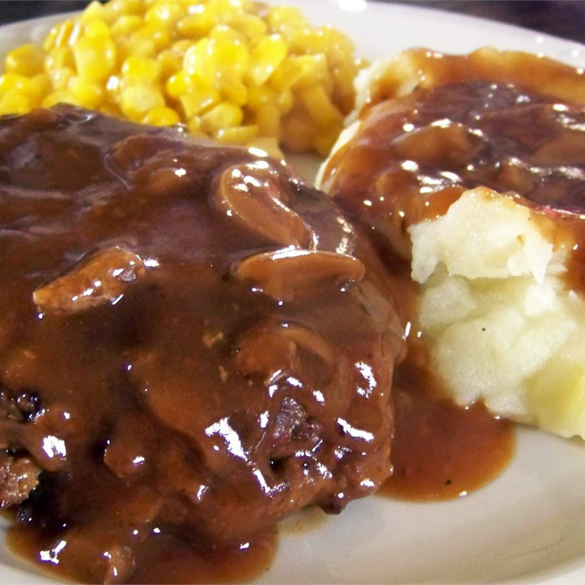

Salisbury Steak

Description
This recipe makes a delicious salisbury steak with gravy. Goes well with mashed potatoes
and a nice homemade biscuit. It also makes a very good freezer stuffer if you want to make
extra and have quick and easy dinners for the future.
Ingredients
- 1 10.5oz can condensed French onion soup
- 1.5 lbs ground beef
- .5 cups dry bread crumbs
- 1 egg
- 1/4 tsp salt
- 1 tbps flour
- 1/4 cup ketchup
- 1/4 cup water
- 1 tbsp Worchestershire sauce
- 1/2 tsp mustard powder
Directions
- In a large bowl, mix together 1/3 cup condensed french onion soup with ground beef,
bread crumbs, egg and salt. Shape in to 6 oval patties
- In a large skillet over medium-high head, brown both sides of patties. Pour
off excess fat.
-
In a small bowl, blend flour and remaining soup until smooth. Mix in ketchup, water
, Worchestershire sauce and mustard powder. Pour over meat in skillet. Cover, and
cook for 20 minutes while stirring occasionally.